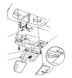
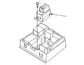
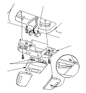

HFT Microphone Removal/Installation - Without NAV.
Without Navigation System, With Sunroof
Remove the front individual map light.
Disconnect the 3P connector (A) from the HFT microphone.
Carefully pry off the sunroof switch assembly (B) from the map light housing (C) while pressing in on the retaining tabs (D).

Remove the screw from the HFT microphone (A).
Install the HFT microphone in the reverse order of removal.

Without Navigation System and Sunroof
Remove the front individual map light.
Disconnect the 10P connector (A) from the HFT microphone.
Carefully pry off the microphone (B) from the map light housing (C) while pressing in on the retaining tabs (D).
Install the HFT microphone in the reverse order of removal.
